「软件设计师」操作系统基本原理
操作系统概述
- 操作系统与计算机体系结构之间的关系
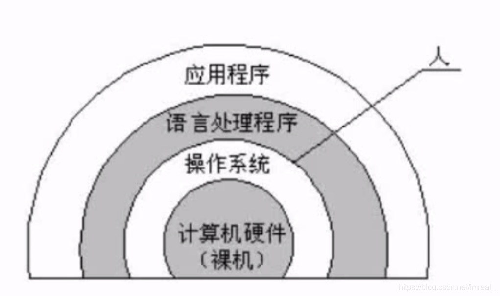 - 操作系统具备的管理职能
- 进程管理
- 进程的状态
- 前趋图
- pv操作
- 死锁问题
- 存储管理
- 段页式存储
- 页面置换算法
- 文件管理
- 索引文件
- 位示图
- 作业管理
- 设备管理
- 数据传输控制方式
- 微内核操作系统
- 虚设备与SPOOLING技术
- 进程管理
进程管理
进程的状态
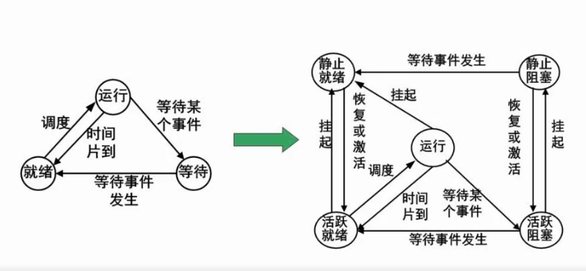
进程的同步与互斥
- 互斥：千军外马过独木桥
- 同步：速度有差异，在一定情况停下等待
PV操作
- 临界资源：诸程序间需要互斥方式对其进行共享的资源，如打印机、磁带机等
- 临界区：每个进程中访问临界资源的那段代码称为临界区
- 信息量：是一种特殊的变量
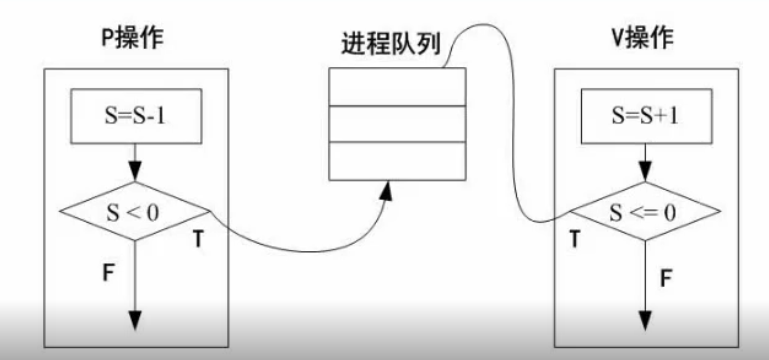
- 解题技巧
- 每一个箭头看成一个资源
- 箭头的起点是V操作
- 箭头的终点是P操作
死锁问题
- 如果一个进程在等待一件不可能发生的事，则进程就死锁了。而如果一个或多个进程产生死锁，就会造成系统死锁
假设有k个进程，每个进程需要n个资源
则不发生死锁所需要的最小资源为
- 死锁的条件
- 互斥
- 保持和等待
- 不剥夺
- 环路等待
- 死锁的避免
- 有序的资源分配：资源利用率较低
- 银行家算法
- 当一个进程对资源的最大需求量不超过系统中的资源数时可以接纳该进程
- 进程可以分期请求资源，但请求的总数不能超过最大需求量
- 当系统现有的资源不能满足进程尚需资源数时，对进程的请求可以推迟分配但总能使进程在有限的时间里得到资源
存储管理
分区存储组织
例：某计算机系统的内存大小为128k，采用可变分区分配方式进行内存分配，现有作业4申请内存9k，几种不同的存储分配算法在分配中，会产生什么样的结果呢?
- 首次适应法：把即将执行的作业安排在第一个能够容纳它的空间
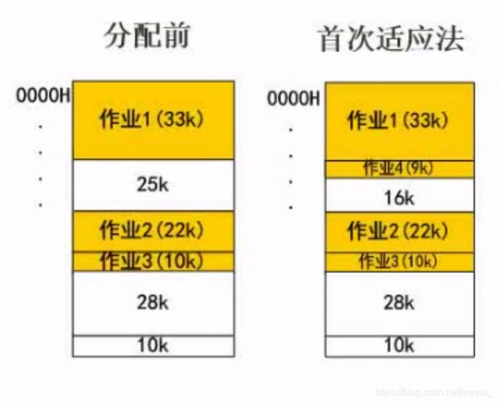 - 最佳适应法：把即将执行的作业安排在内存空间与它最接近的空间进行存放，如该例子中，作业4占据空间9k，通过该算法，计算机就将其存放在了空间为10的地址中；由于在每次存放作业以后内存空间剩余量极低，长期以后该算法会造成内存空间碎片化，降低内存地址的利用率

- 最差适应法：该算法能够解决内存空间碎片化的问题，如图所示:该算法优先将作业存放至内存空间最大的地址
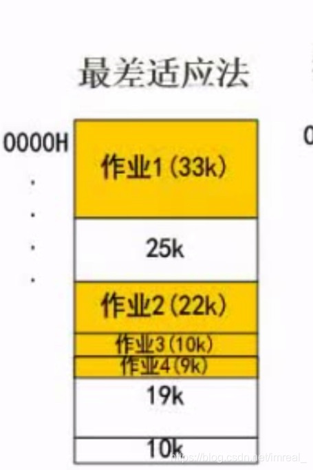 - 循环首次适应法：该算法是将空闲的区域连成环状，将作业在环状区域内顺次进行分配(从第二个空闲区域开始分配)
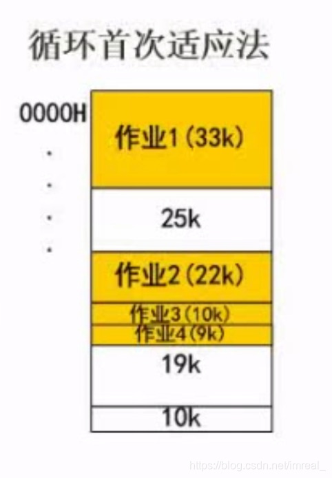
页式存储
- 提出背景：为了解决碎片化的存储
- 概念：把用户程序分成等分大小的n个“页”(并将其编号)，再在地址空间中以nk为基数划分等大小的块(同样将其编号，块号又称页帧号)，运行用户程序时不再将整个程序进行运行，而是根据需要分批次将页调入到块中运行，而页和块之间的对应关系用页表来记录
- 优点：利用率高，碎片小，分配及管理简单
- 缺点：增加了系统开销(系统每次读取程序都需要先读取页表将其定位，再进行程序的读取)；可能产生抖动现象
- 页号与页帧号的关系必须通过表来进行查询
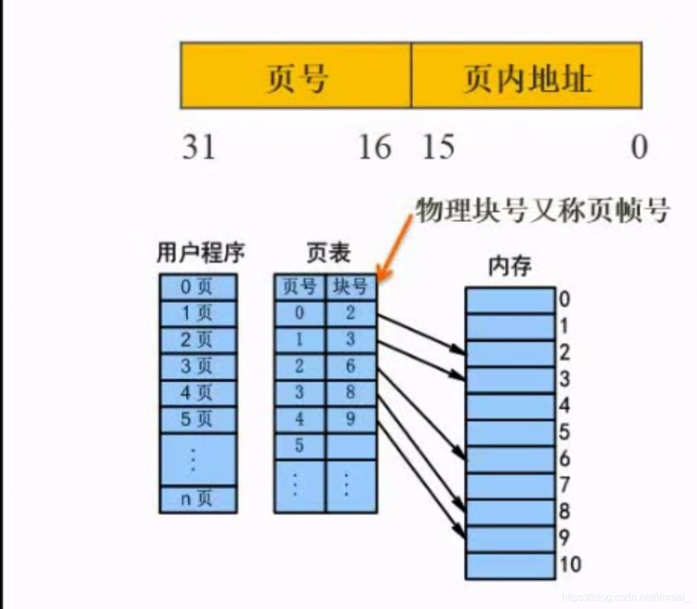 - 逻辑地址和物理地址：要求物理地址，先把逻辑地址(逻辑地址由页号和页内地址组成)当中的页号和页内地址分开，要把它们分开，首先将页面大小写成二进制的形式，等于；则说明一个页的页内地址有n位，而在逻辑地址中高于(从右往左)n位的部分就是页号,得到页号之后进行查表，得到相应的页帧号，而物理地址=页帧号+页内地址(该式子中的“+“是拼接，并非做加法)
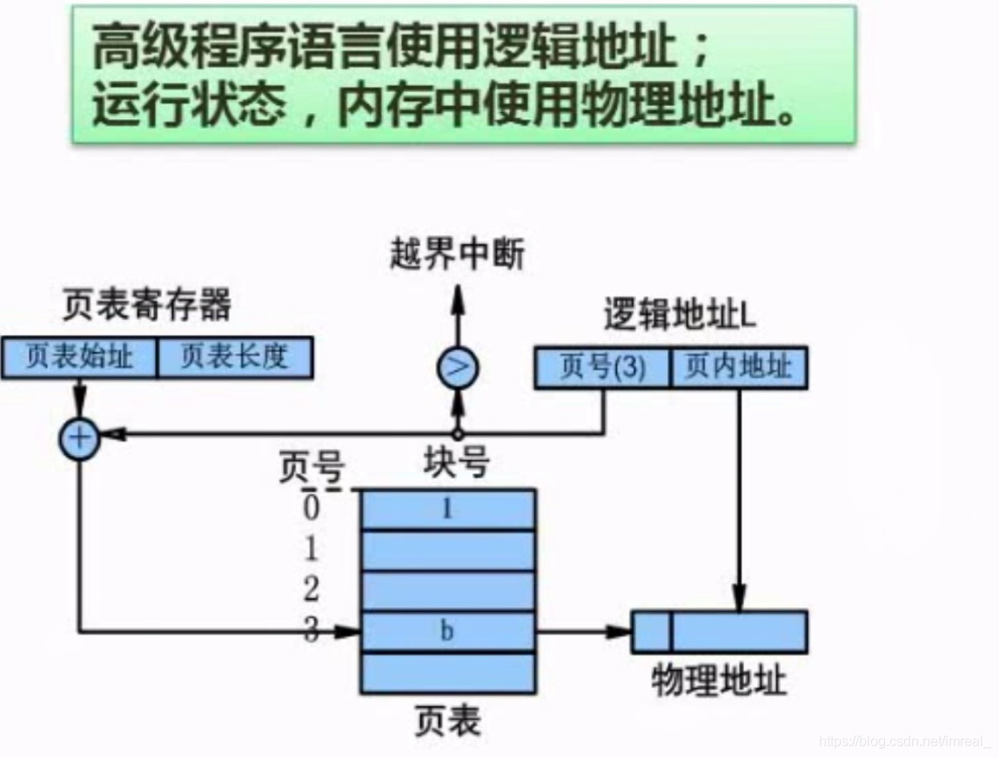
段式存储
- 概念：按逻辑结构进行内存的划分，划分为n个段，每一个段的大小无要求，可以相等也可以不等，包括段号和段内地址，例如：可以将main主函数作为一个段，然后将第一个子函数作为一个段，然后将第二个子函数作为一个段……
- 段式存储按函数之间的逻辑对内存进行划分，大小差异较大，存在段表，段表的内容包括段号，段长以及基址
- 基址：就是该段在地址的起始位置
- 优点：多道程序共享内存，各段程序修改互不影响
- 缺点：内存利用率低，内存碎片浪费大
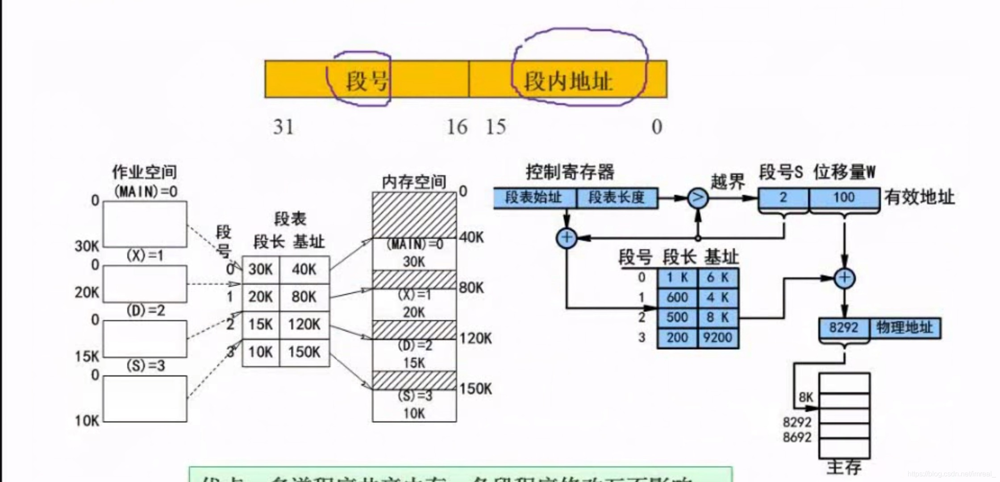
段页式存储
-
段页式存储是结合了段式和页式的一种存储组织，将内存先分段，再分页
- 优点：空间浪费小，存储共享容易，存储保护容易，能够动态连接
- 缺点：由于管理软件的增加，复杂性和开销也随之增加，需要的硬件以及占用的内容也有所增加，使得执行速度大大下降(程序在执行时要先查段表，再查页表，使得系统资源消耗增加)
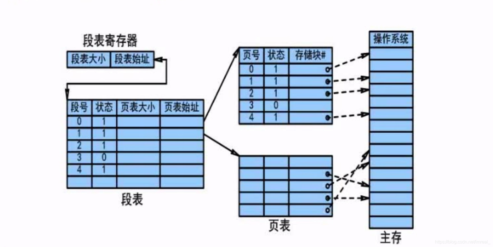
-
快表：快表是一块小容量的相联存储器，由高速缓存器(放在cache之中)组成，速度快，并且可以从硬件上保证按内容并行查找，一般用来存放当前访问最频繁的少数活动页面的页号
页面置换算法
- 产生背景：当程序的需要与系统资源的供给发生矛盾时的一种解决方案，即将不用的页面淘汰掉，置换为需要执行的页面
- 页面置换算法的四种算法
- 最优算法：尚处于理论层面
- 随机算法：随机淘汰一个页面
- 先进先出算法(FIFO)：即淘汰时按照之前执行的先后顺序进行淘汰，有可能产生“抖动”
- 抖动：把经常用到的页置换出去，要用的时候发现没有内存了，造成进程中断
- 最近最少使用算法(LRU)：在保证最近使用的页面不被中断的情况下，将最少使用的页面淘汰，不会产生“抖动”
例： 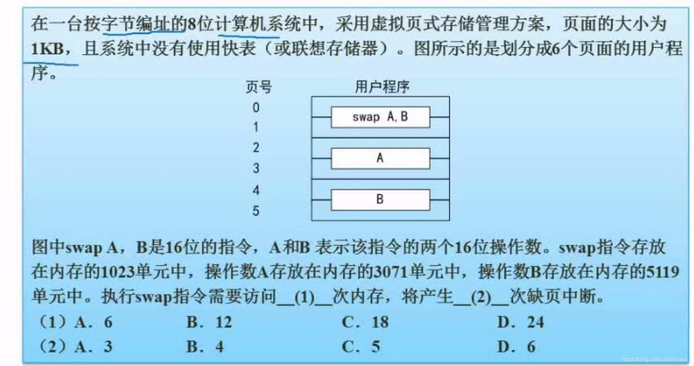
“没有使用快表”即表示每读一次程序的块，需要先在内存上面查表，才能读取相应的内存块，所以每一个块需要两次内存的访问，所以6个块(在页式存储结构中，每一个页面对应一个块)总共会产生12次对内存的访问;一个内存单元占据1b的内存，所有的指令(无论占据了几个页面)都只产生一次缺页中断，而操作数A和操作数B则各自产生两次缺页中断，因此总共产生了5次缺页中断
文件管理
索引文件结构
索引一般会有13个节点(默认情况下)，从0开始编号，其中索引0到9这十个索引称为直接索引，直接对应物理盘块，每一个物理盘块都对应了索引文件的内容，而索引10则称为间接索引，里面只存储地址，如一个物理盘块的地址大小为4个字节，而一个物理盘块的大小为4k，则4k/4字节等于1024，代表着1024个物理盘块的地址，因此该索引内可以存储的文件大小为；该10号索引称之为一级间接索引；索引11则是二级间接索引，即索引的内容还是索引，再索引的内容才是物理盘块，二级简介索引存储的文件大小即为；虽然分级越多存储的内容越多，但相应的，效率也会更低
文件和树型目录结构
- 绝对路径：是从盘符开始的路径
- 相对路径：是从当前路径开始的路径
例：在该文件树型图中，若文件目录的位置是D1，若要求f2的路径，则绝对路径：/D1/W2/F2；相对路径：W2/F2
- 文件属性
- R：只读文件属性
- A：存档属性
- S：系统文件
- H：隐藏文件
- 文件名的组成
- 驱动器号
- 路径
- 主文件名
- 扩展名
空闲存储空间的管理
- 空闲区表法：用一个表来记录哪些地方是空闲的，以便将其管理起来
- 空闲链表法：把空闲区域都链起来，链成一条链表，然后需要空间分配的时候，从这条链表中划出一部分出来即可
- 位示图法：将所有存储区域分成无数个物理块，然后以1表示被占用，0表示空闲，将所有空间进行标记
例：4195号是第4196个位，因此，因此物理块的使用情况应该在第132个字中描述
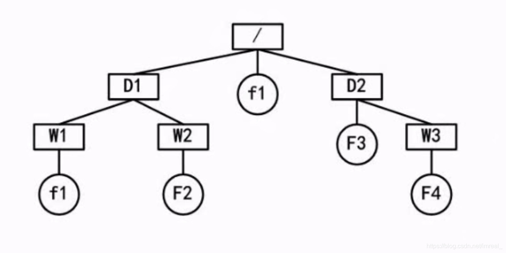
- 成组链接法
设备管理——数据传输控制方式
主要是指内存和外设之间的数据传输控制问题
- 程序控制方式（程序查询方式）：这种方式是最为低级的，也是CPU介入最多的一种机制，即整个数据的传输控制很多时候都要CPU的介入，此时外设会处于非常被动的位置，即不会主动的去返回信息，如是否完成等信息，而是由CPU主动发出查询指令，进而对信息进行查询
- 程序中断方式：大部分与程序控制方式相同，但相较于程序控制方式，增加了中断方式，主动性更强，即如果外设完成了数据的传输等操作，外设会发出中断指令，效率比程序控制方式更高
- DMA方式（直接存储器存取方式）：有专门的DMA控制器，只要是外设和内存之间的数据交换过程，就由这个控制器进行管控，CPU只需要在开头的时候做一些介入，如初始化等操作
- 设备管理的五个层次
- 由上到下依次是：用户进程、与设备无关的系统软件、设备驱动程序、中断处理程序、硬件
SPOOLING技术
- 概念：例如：四个人通过远程手段准备使用一台打印机，而这台打印机在同一段时间内只能让一个用户使用，若一个用户正在使用该打印机，另一名用户试图使用该打印机时就会提示该打印机被占用，事实上这样做使得打印机的效率非常的低，而面对这个问题，采用了SPOOLING技术的打印机会进行如下操作：给打印机创建一个缓存区，每一个用户在打印时都会进入缓存区，而从缓存区到真正打印则需要挨个排队，即打印机在打印时不再排斥其他用户的打印操作，而是将其缓存起来，在将当前操作完成后立即进行第二个操作，这样做不仅使得用户的操作界面变得更为友好，也极大的提高了打印机的打印效率
微内核操作系统
-
概念：把内核做的更小具有许多好处与优势，如提高了可靠性，稳定性，安全性；因为操作系统作为核心的系统软件，如果操作系统出现故障，就会影响整个系统的运行，将内核做的更小就会降低故障的发生率
-
单体内核和微内核的区别及优缺点
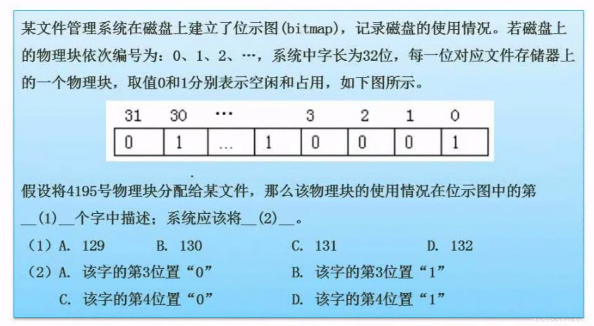 -
Linux系统的常用命令
- attrib：声明
- modify：修改
- chmod：修改文件权限
- change：改变
- wechat
- alipay